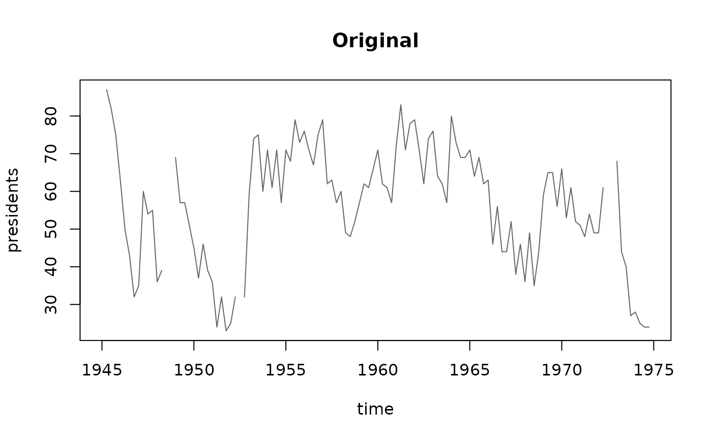
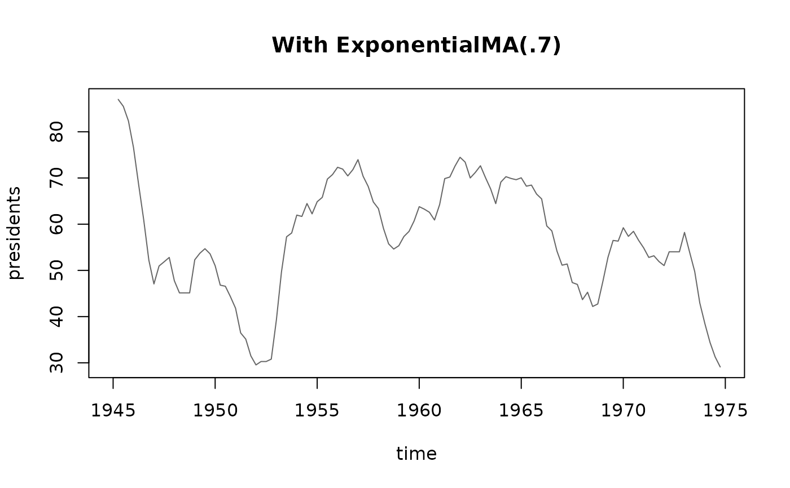

Applies an exponential moving average to components of a data stream.
Arguments
- dsd
The input stream as an DSD object.
- dim
Columns to which the filter is applied. The default is all columns.
- alpha
Smoothing coefficient in \([0, 1]\). Larger values discount older observations faster.
Details
The exponential moving average is calculated by:
\(S_t = \alpha Y_t + (1 - \alpha)\; S_{i-1}\)
with \(S_0 = Y_0\).
See also
Other DSF:
DSF(),
DSF_Convolve(),
DSF_Downsample(),
DSF_FeatureSelection(),
DSF_Func(),
DSF_Scale(),
DSF_dplyr()
Examples
# Smooth a time series
data(presidents)
stream <- data.frame(
presidents,
.time = time(presidents)) %>%
DSD_Memory()
plot(stream, dim = 1, n = 120, method = "ts", main = "Original")

smoothStream <- stream %>% DSF_ExponentialMA(alpha = .7)
smoothStream
#> Memorized Stream
#> + exponential MA(0.7)
#> Class: DSF_ExponentialMA, DSF, DSD_R, DSD
reset_stream(smoothStream)
plot(smoothStream, dim = 1, n = 120, method = "ts", main = "With ExponentialMA(.7)")
